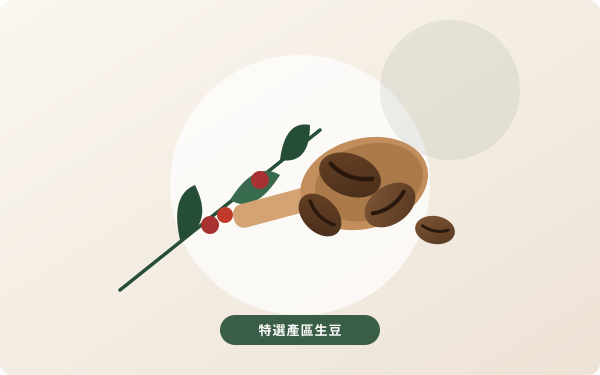
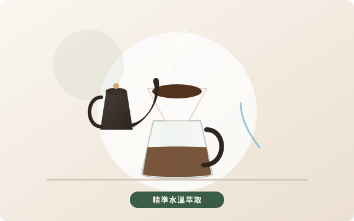
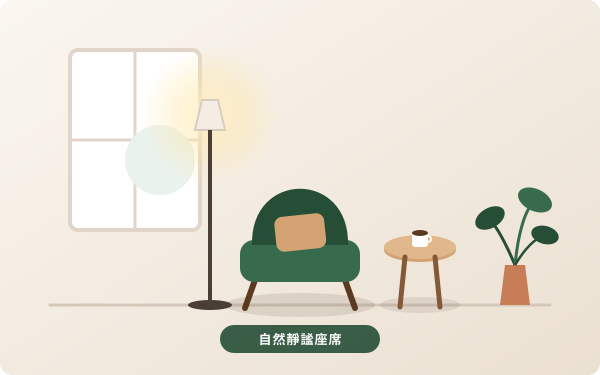

特選咖啡豆
堅持嚴選高海拔單一莊園的小農咖啡生豆，注重產地溯源與永續耕作。藉由適度烘焙保留咖啡豆天然的水果花香與清爽酸甜層次。
歐椰咖啡創立於對純粹風味的堅持。在步調緊湊的現代都市裡，我們常常忘了停下腳步深呼吸。我們希望為每一位走進店裡的朋友，打造一處暫停時間的靜謐綠洲。
從高山農莊的特選生豆、匠心烘焙到職人專注手沖，每一杯咖啡不僅僅是一份飲品，更是陪伴你重新梳理思緒、找回自我步調的日常儀式。
從選豆、萃取到空間細節，我們以真摯用心打造每一份細膩體驗。

堅持嚴選高海拔單一莊園的小農咖啡生豆，注重產地溯源與永續耕作。藉由適度烘焙保留咖啡豆天然的水果花香與清爽酸甜層次。

每一滴咖啡都由職人悉心掌控水溫、研磨顆粒粗細與悶蒸節奏。穩定的水流與專注的沖煮工藝，淬煉出香氣馥郁、餘韻回甘的完美風味。

以大地色系、溫潤原木與自然綠植構築寬敞通透的環境。配有溫馨閱讀角落與舒適插座座位，讓你在無拘束的氛圍中放空或專注工作。